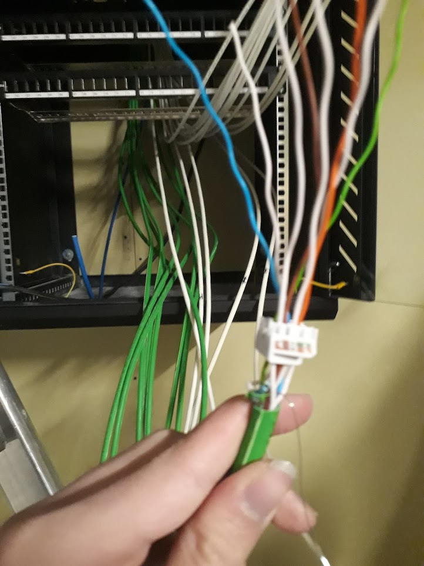
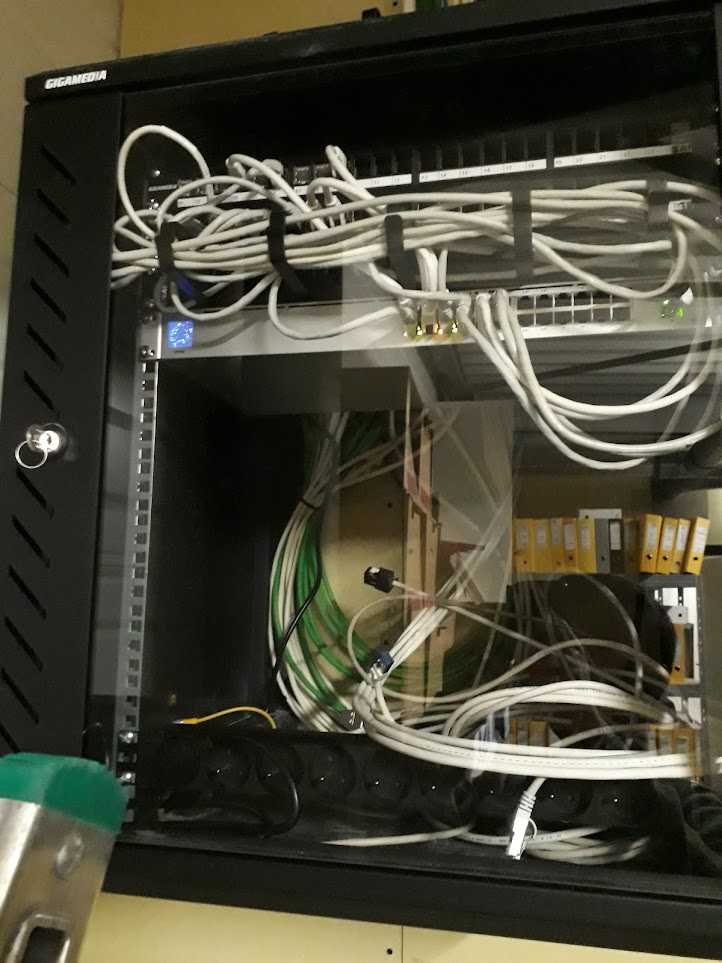
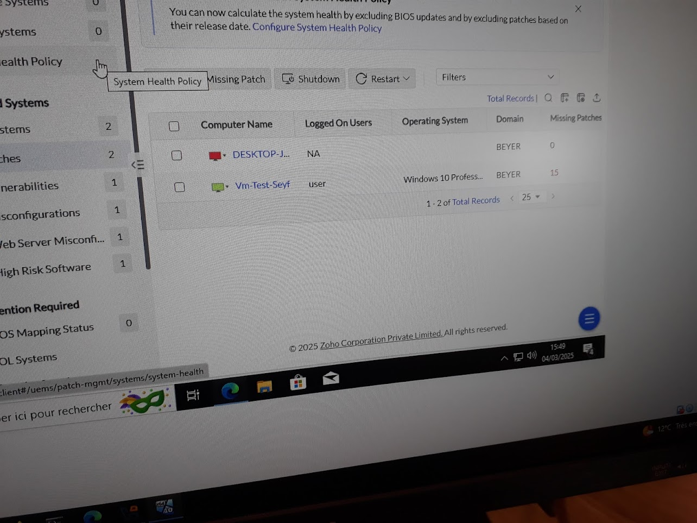
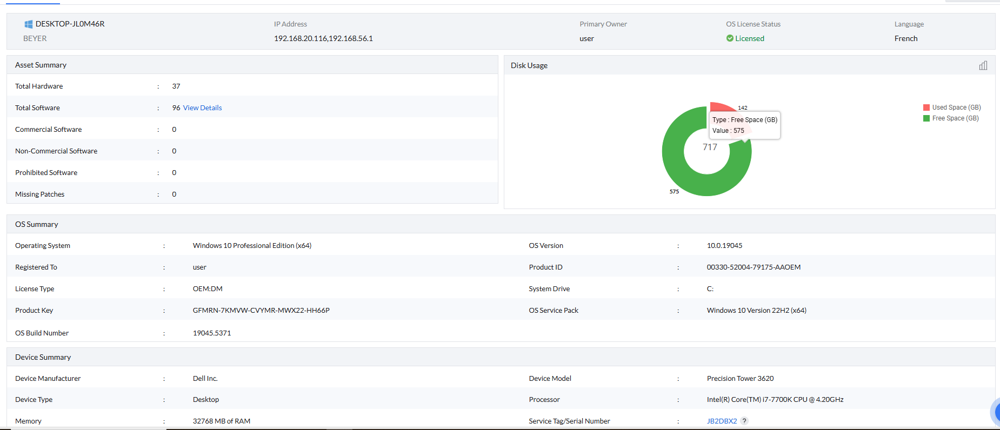
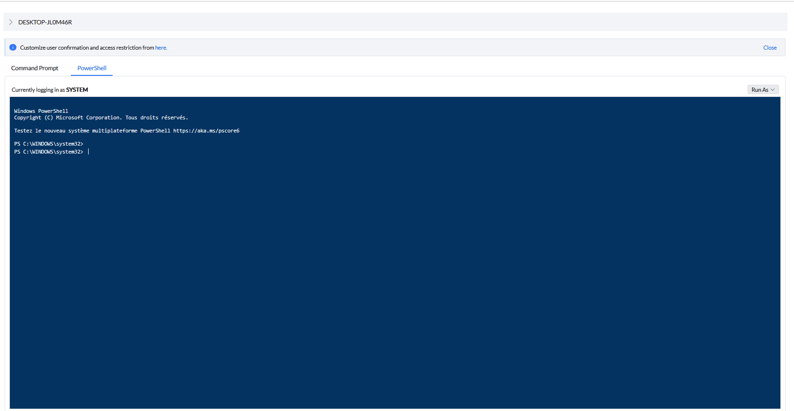

Étudiant en informatique
Introduction personnelle : Je suis un Passionné de Cybersécurité. Commencant d'est la 3ème avec mes premier programme en bas je suis aller j'usqua aller a aider mes établissement dans la résolution de faille sur leur site. Suite à sa j'ai su ce que je voulais faire, travailler dans la Cybersécurité et me voila maintenant a EPitech.
J'adore essayer de trouver les failles des sites internet des jeux/site que j'utilise afin de le report
je suis bénévole chez Nationsglory qui est le 2eme plus grand serveur minecraft de France.
Je les aide à la construction de nouveau projet tel que des mise a jour sur un de leur sous serveur.
Je suis aussi bénévole cher Ëmmaus connect strasbourg afin d'aider les débutant a l'utilisation aux outils numérique.
Lors de mon temps libre J'aime aussi faire des partie d'échec j'en fait depuis l'age de 5an et depuis le CP en club depuis 11ans.
Mars 2024 •Desclicks
Stage de pratique professionnel en tant que technicien
Mars 2021-Juillet 2022, septembre-octobre 2023, mars-avril 2025
•Administrateur réseau au groupe beyer
Durant ce stage J'ai du effectuer plusieurs stage comme installer un réseau téléphonique dans le cadre de rénovation des locaux.
 
J'ai dus aussi m'occuper de préparer un script afin de réduire le temps t'installation des logiciel.
Le script defait pourvoir demander quel application installer sur le pc, choisir les navigateur par défaut ainsi que mettre la machine sur le domaine
le plus rapidement possible(mon script a été fait en powershell).
Je me suis aussi occupée de trouver un outils d'administration réseau capable de gérée les permission des utilisateur, les heure ou les machines s'éteigne, voir les application/extention installer, faire du transfer de fichier ainsi que pouvoir faire du support a distance ainsi qu'un sisteme de ticket support.   
Email: seyf.sfaxi@epitech.com
Téléphone: +33 07 69 56 45 47